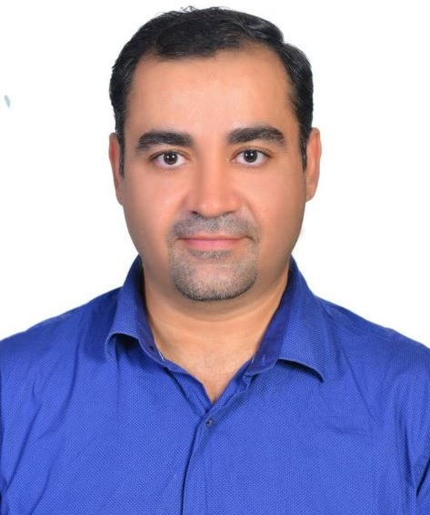

Natural Smile is the Perfect Smile.
Minimally Invasive Expertise.
Contact Us

PERFECT SMILE
DENTAL CENTER ™️
“UAE
BRAND”
“Let Perfect Smile change your world, Don’t Let the world Change your Smile.”
View Treatment
Committed To
Trusted Health Care
We a team of Dentist, Implantologist, Orthodontist.
Meet Our Doctors & Team
Braces expert
Only at Perfect Smile
20
years in Dubai market
Fast,Affordable and Reliable


About Us
“Perfect Smile Orthodontic and Cosmetic Dental Center” was first opened in Dubai in 2014 under the direction of a highly reputable and experienced Dentist, Dr. Mohammad Zuhair Al Khairo.
Perfect Smile Orthodontic and Cosmetic Dental Center is dedicated to a totally comprehensive dental care approach that focuses on promoting health, rather than just treating the disease. Our goal is to provide high level of expertise and service in a calming professional atmosphere combined with latest technology and state-of-the-art equipment.
With all years of experience in Dubai, our team which consist of specialists in Conservative, Implantology, and orthodontics, is committed to provide excellent results and quality patient care in the United Arab Emirates.
Our center employs cutting edge methods and modern technology in dentistry and will continuously updates and upgrades the practice to give the patients the highest level of care. In addition, the center has an in-house occlusion scanning system. The Clinic is pleased to be one of the few dental practices in Dubai to have a qualified DHA licensed oral implantologist working on its premises. Occlusion scanning system combined with the high experience would insure a state of the art restorative and facial therapy procedures
All dentists and dental assistants are highly trained and experienced. The team is committed in giving our patients the best care possible. Patients are assured that they will receive consistently high quality care no matter which dentist they see. Patients' safety is a priority. To ensure maximum protection to the patients, the staff consistently applies state-of-the-art sterilization and disinfection techniques on all instruments and dental rooms.
Moreover, the Clinic is a firm believer in continuing education programs. The dentists and dental assistants, regularly attend courses that enable them to keep up to date with the latest developments to provide its patients with the best service
Help Support Desk
Experienced Doctors

Meet Our Founder

Dr. MOHAMMAD ZUHAIR ALKHAIRO
Medical Director
- BDS: DENTAL SURGEON.
- MSc, MASTER OF CONSERVATIVE DENTISTRY.
- GBOI: GERMAN BOARD OF ORAL IMPLANTOLOGY.
- MEMBER OF GERMAN ASSOCIATION OF ORAL IMPLANTOLOGY (DGZI)
- MEMBER OF AMERICAN DENTAL ASSOCIATION (ADA)
The Founder and Medical Director of Perfect Smile Dental Center in Dubai.
He was born in Mosul, and he is a Caribbean national. He got his bachelor's degree in dental and oral surgery in 2000, and he was among the high ranked graduates, for that reason he was granted a position to work as a dentist and as a faculty member at Mosul University since 2001. He completed his master's in Conservative Operative Dentistry in 2005 with a degree of honor. He moved to the United Arab Emirates, to practice in Dubai in 2005 where he got the Dubai Health Authority license and worked as a dentist in the private sector since 2005. He finished the German Board of Dental Implantology in 2013 from the University of Munster, Germany. And he graduated the first among 25 graduates that year. Since then, he is a member of the German Association of Oral Implantology.
OUR DOCTORS

Dr. MOHAMMAD ZUHAIR ALKHAIRO
Medical Director

Dr. HEBA
EL HAKIM
Dental Surgeon

Dr. AHMAD
Dr. AHMAD
SHALATI
Specialist in Orthodontics
OUR TEAM

REYMOND
LOTA NORA
Operational Manager

AZZAWIYA
UDARBE SALVADOR
Administrative staff

KATRINA
ALBANO
Dental Assistant

ALVIN JAY
VIBORA
Registered Nurse